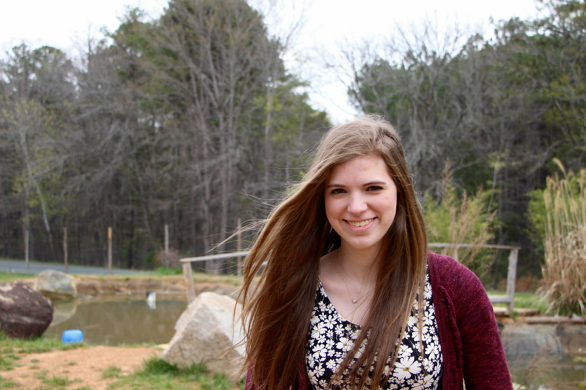

About Me
My name is Michelle Verderber and I'm currently studying photography at Appalachian State University. I use a Canon T5i camera with a 50mm lens. I enjoy taking nature shots at Sarah P. Duke Gardens and hiking the trails at the Blue Ridge Parkway.
Verderber Photography is an all-purpose photography studio, with services ranging from personal pictures to family photos to wedding photography. On a personal note, I am currently working on perfecting my portrait techniques. Most of my current portraits are of friends and family, but I am eager to expand my portfolio with new and exciting pictures of other clients.